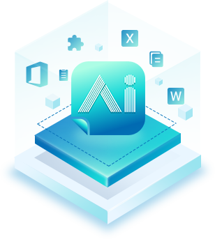

跨平台智能文档撰写利器，实现文档智能撰写
Word插件及网页版，内容互通，一键同步
果冻绘写刷年报
债券年报智能辅助撰写工具
支持WPS、Office365及以上版本，操作环境为Windows系统
查看插件安装方法
专注刷年报
高比例完成上交所债券年报、半年报、受托年报撰写，可快速通过XBRL有效性验证；
数据智能填充
集成权威原始数据源，深度读取自有报告信息，实现智能填充；
撰写自动留痕
数据来源一键追查，全文留痕编辑，方便校验审核；
所见即所得
撰写全程不改变内容格式，不丢失文字标点，无需担心出错。
多类型报告撰写
高比例完成对外申报类报告及内部管理文件的智能撰写工作；
极简操作体验
智能匹配海量发行人数据；一处修改全文更新，自动保存至服务器
数据溯源优化
自动记录撰写历史，点击即可完成数据溯源，展示更清晰，修改更 便捷；
底稿更换无忧
支持多次更换底稿文档，系统智能比对底稿数据，提示数据更新。
*果冻绘写Pro插件包含刷年报插件上述所有功能

果冻绘写Pro
智能撰写，极简操作，轻松搞定上百金融报告
支持WPS、Office365及以上版本，操作环境为Windows系统
查看插件安装方法
果冻绘写网页端
团队在线协同办公，实现高效项目管理
立即试用
项目协同
团队在线协同编辑，包含管理员、项目成员、质控等丰富角色，任 务灵活分配；
项目管理
实时跟踪项目进度，可创建工作日历、订阅提醒事项，查看紧急待 处理项目；
模板配置
每种报告类型均可配置多份报告模板，适应多种场景，还可自定义 修改；
文本解析
智能提取底稿信息，支持上传审计报告、募集说明书等数十种文档。
*网页端现只可编辑模板数据内容，其余固定部分可在插件端修改
选择果冻绘写，更安全、更便捷、更可靠
选择您所需要的果冻绘写服务
果冻绘写刷年报
果冻绘写pro
果冻绘写网页端
债券年报
外部申报文件
内部管理文件
后督类
内部管理文件
后督类
外部申报文件
内部管理文件
后督类
内部管理文件
后督类
公开数据来源
公开数据来源
公开数据来源
一人编辑
多人协同编辑
多人协同编辑
支持单人项目管理
支持单人项目管理
支持单人项目管理
由管理员统一管理
由管理员统一管理
无限次审计报告更新
无限次审计报告更新
无限次审计报告更新
支持数据追溯
支持数据追溯
支持数据追溯
一份299元
三份799元
五份1250元
三份799元
五份1250元
一份299元
三份799元
五份1250元
三份799元
五份1250元
企业限定
每份报告低至199元
每份报告低至199元
获取更多产品报价